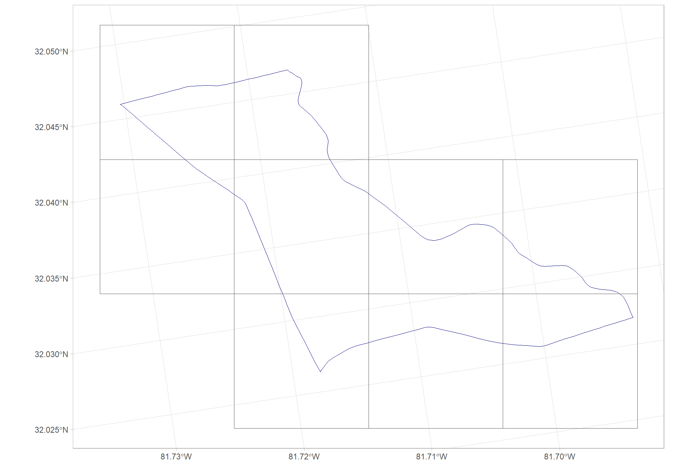
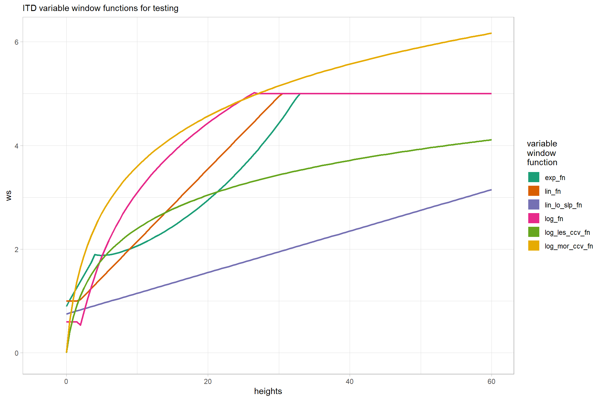

Section 2 Data Preparation
Let’s check out the data we need to process and create: 1) a processing data frame; 2) a LAS catalog (lidR package) with information on the point cloud data
The priority list for processing this data is:
- Sycan ALS
- Fort Stewart ALS
- New Jersey ALS
- Salt Cabin SfM
- Fort Stewart UAS Lidar
- Sycan UAS Lidar
- Salt Cabin ALS
I debated creating an automated pipeline to process all of the data but instead will create individual sections for each of the study sites and process them manually. This will overcome the challenge of defining unique variable window functions for use in ITD which we’ll tune using cloud2trees::itd_tuning()
Load the standard libraries we use to do work
# bread-and-butter
library(tidyverse) # the tidyverse
library(viridis) # viridis colors
library(harrypotter) # hp colors
library(RColorBrewer) # brewer colors
library(scales) # work with number and plot scales
library(latex2exp)
# visualization
library(mapview) # interactive html maps
library(kableExtra) # tables
library(patchwork) # combine plots
library(ggmap) # correlation plots
# spatial analysis
library(terra) # raster
library(sf) # simple features
library(lidR) # lidar data
library(rgl) # 3d plots
library(cloud2trees) # the cloud2trees2.1 Study Sites
let’s check out the vector data of the study sites
dir_temp <- "../data"
# what vector data?
df_temp <-
list.files(dir_temp, pattern = ".*\\.(shp|gpkg)$", recursive = T) %>%
dplyr::tibble() %>%
setNames("fpath") %>%
dplyr::filter(
!str_detect(fpath, "point_cloud_processing")
) %>%
dplyr::mutate(
study_site = dirname(fpath)
, fpath = file.path(dir_temp, fpath)
, fdir = dirname(fpath)
) %>%
dplyr::group_by(study_site) %>%
dplyr::filter(dplyr::row_number()==1) %>%
dplyr::ungroup()
if(nrow(df_temp)==0){stop("no vector data found")}
# load in the vector data
study_sites_sf <- 1:nrow(df_temp) %>%
purrr::map(\(x)
sf::st_read(
dsn = df_temp$fpath[x]
) %>%
# put all in the same projection
sf::st_transform(crs=5070) %>%
dplyr::mutate(study_site = df_temp$study_site[x]) %>%
dplyr::select(study_site)
) %>%
dplyr::bind_rows() %>%
dplyr::inner_join(df_temp, by = "study_site")## Reading layer `Burn Unit F6_6' from data source
## `C:\Data\usfs\dod_cloud2trees_demo\data\FortStewart\Burn Unit F6_6.shp'
## using driver `ESRI Shapefile'
## Simple feature collection with 1 feature and 6 fields
## Geometry type: POLYGON
## Dimension: XY
## Bounding box: xmin: 431049.1 ymin: 3543511 xmax: 434589.8 ymax: 3545826
## Projected CRS: WGS 84 / UTM zone 17N
## Reading layer `CB_BurnBlock' from data source
## `C:\Data\usfs\dod_cloud2trees_demo\data\NewJersey\CB_BurnBlock.shp'
## using driver `ESRI Shapefile'
## Simple feature collection with 1 feature and 13 fields
## Geometry type: POLYGON
## Dimension: XY
## Bounding box: xmin: 525216.5 ymin: 365372.9 xmax: 529448.3 ymax: 370453.3
## Projected CRS: NAD83 / New Jersey (ftUS)
## Reading layer `SaltCabin_Unit2_Boundary' from data source
## `C:\Data\usfs\dod_cloud2trees_demo\data\SaltCabin\SaltCabin_Unit2_Boundary.shp'
## using driver `ESRI Shapefile'
## Simple feature collection with 1 feature and 4 fields
## Geometry type: POLYGON
## Dimension: XY
## Bounding box: xmin: 453612.2 ymin: 4502029 xmax: 454053.5 ymax: 4502398
## Projected CRS: NAD83 / UTM zone 13N
## Reading layer `Sycan_2A' from data source
## `C:\Data\usfs\dod_cloud2trees_demo\data\SycanMarsh\Sycan_2A.shp'
## using driver `ESRI Shapefile'
## Simple feature collection with 1 feature and 10 fields
## Geometry type: POLYGON
## Dimension: XY
## Bounding box: xmin: 4748335 ymin: 436780.6 xmax: 4750706 ymax: 438275.2
## Projected CRS: NAD_1983_StatePlane_Oregon_South_FIPS_3602_Feet# figure out where the point cloud data is
ptcld_df_temp <-
1:nrow(study_sites_sf) %>%
purrr::map(function(x){
# look for dirs with las/laz
dirs <-
study_sites_sf$fdir[x] %>%
list.files(pattern = ".*\\.(laz|las)$", recursive = T, full.names = T) %>%
dirname() %>%
tolower() %>%
unique() %>%
purrr::keep(
~ !str_detect(.x, "point_cloud_processing")
)
# gen df
df <- dplyr::tibble(
als_dir = character(1)
, uas_lidar_dir = character(1)
, uas_sfm_dir = character(1)
) %>%
dplyr::mutate(
als_dir = purrr::keep(dirs, ~ str_detect(.x, "als"))[1] %>% dplyr::coalesce(as.character(NA))
, uas_lidar_dir = purrr::keep(dirs, ~ str_detect(.x, "uas") & str_detect(.x, "lidar"))[1] %>% dplyr::coalesce(as.character(NA))
, uas_sfm_dir = purrr::keep(dirs, ~ str_detect(.x, "uas") & str_detect(.x, "sfm"))[1] %>% dplyr::coalesce(as.character(NA))
, fdir = study_sites_sf$fdir[x]
)
return(df)
}) %>%
dplyr::bind_rows()
# add ptcld dirs to data
study_sites_sf <- study_sites_sf %>%
dplyr::left_join(ptcld_df_temp, by = "fdir")
# what?
study_sites_sf %>%
dplyr::glimpse()## Rows: 4
## Columns: 7
## $ study_site <chr> "FortStewart", "NewJersey", "SaltCabin", "SycanMarsh"
## $ fpath <chr> "../data/FortStewart/Burn Unit F6_6.shp", "../data/NewJe…
## $ fdir <chr> "../data/FortStewart", "../data/NewJersey", "../data/Sal…
## $ als_dir <chr> "../data/fortstewart/als_2018_laz_files", "../data/newje…
## $ uas_lidar_dir <chr> "../data/fortstewart/uas_lidar", NA, NA, "../data/sycanm…
## $ uas_sfm_dir <chr> NA, NA, "../data/saltcabin/uas_sfm", NA
## $ geometry <POLYGON [m]> POLYGON ((1336943 1097560, ..., POLYGON ((1817860 207637…where are these places?
# first plot a point so we can see it on the map
mapview::mapview(
sf::st_centroid(study_sites_sf)
, zcol = "study_site"
, cex = 5
, label = T
, legend = T
, popup = T
, layer.name = "study areas"
) +
# add the study bounds
mapview::mapview(
study_sites_sf
, color = "black"
, lwd = 2
, alpha.regions = 0
, label = F
, legend = F
, popup = F
)let’s create a pretty name for each site
2.2 Point Cloud Data
Let’s check out the point cloud data we got
las_df_temp <- study_sites_sf %>%
sf::st_drop_geometry() %>%
dplyr::select(study_site, tidyselect::ends_with("_dir")) %>%
tidyr::pivot_longer(
cols = -c(study_site)
, values_drop_na = T
) %>%
dplyr::mutate(
name = stringr::str_remove_all(name, "_dir")
, nm = stringr::str_c(study_site, name, sep = "_")
)
# directory with the downloaded .las|.laz files
study_sites_las_ctg <- 1:nrow(las_df_temp) %>%
purrr::map(\(x)
lidR::readLAScatalog(las_df_temp$value[x])
)
names(study_sites_las_ctg) <- las_df_temp$nm
# what are these ctgs?
study_sites_las_ctg## $FortStewart_als
## class : LAScatalog (v1.4 format 6)
## extent : 1336000, 1340000, 1095000, 1098000 (xmin, xmax, ymin, ymax)
## coord. ref. : NAD83(2011) / Conus Albers + NAVD88 height - Geoid12B (Meters)
## area : 9 km²
## points : 43.07 million points
## type : airborne
## density : 4.8 points/m²
## density : 3.1 pulses/m²
## num. files : 9
##
## $FortStewart_uas_lidar
## class : LAScatalog (v1.4 format 6)
## extent : 418991.2, 433163, 3537929, 3550245 (xmin, xmax, ymin, ymax)
## coord. ref. : NA
## area : 1102.2 kunits²
## points : 2.08 billion points
## type : airborne
## density : 1.9 points/units²
## density : 1.1 pulses/units²
## num. files : 11
##
## $NewJersey_als
## class : LAScatalog (v1.2 format 1)
## extent : 552848.7, 554163.1, 4409783, 4411353 (xmin, xmax, ymin, ymax)
## coord. ref. : NA
## area : 6.19 kunits²
## points : 80.3 million points
## type : airborne
## density : 13 points/units²
## num. files : 3
##
## $SaltCabin_als
## class : LAScatalog (v1.4 format 0)
## extent : -801159, -797999, 2001522, 2003352 (xmin, xmax, ymin, ymax)
## coord. ref. : NAD83 / Conus Albers
## area : 5.6 km²
## points : 35.22 million points
## type : airborne
## density : 6.3 points/m²
## density : 6.3 pulses/m²
## num. files : 2
##
## $SaltCabin_uas_sfm
## class : LAScatalog (v1.2 format 3)
## extent : 453536.8, 454139, 4501977, 4502440 (xmin, xmax, ymin, ymax)
## coord. ref. : WGS 84 / UTM zone 13N
## area : 278704 m²
## points : 94.51 million points
## type : terrestrial
## density : 339.1 points/m²
## num. files : 1
##
## $SycanMarsh_als
## class : LAScatalog (v1.4 format 6)
## extent : 651000, 653000, 4747000, 4748000 (xmin, xmax, ymin, ymax)
## coord. ref. : NAD83(2011) / UTM zone 10N + NAVD88 height - Geoid18 (m)
## area : 2 km²
## points : 68.02 million points
## type : airborne
## density : 34 points/m²
## density : 25.6 pulses/m²
## num. files : 2
##
## $SycanMarsh_uas_lidar
## class : LAScatalog (v1.2 format 3)
## extent : 651487, 652298.4, 4747227, 4747880 (xmin, xmax, ymin, ymax)
## coord. ref. : WGS 84 / UTM zone 10N
## area : 0.53 km²
## points : 200.55 million points
## type : terrestrial
## density : 378.3 points/m²
## density : 350.8 pulses/m²
## num. files : 1plot the point cloud catalog with the stand boundary
ggplot2::ggplot() +
ggplot2::geom_sf(
data = study_sites_sf %>% dplyr::slice(1)
, color = "navy", fill = NA
) +
ggplot2::geom_sf(
data = study_sites_las_ctg[[1]]$geometry %>% sf::st_transform(sf::st_crs(study_sites_sf))
, color = "gray33", fill = NA
) +
ggplot2::theme_light()
let’s make a quick function to grab a background map (e.g. like a Google Map) for an AOI using the ggmap package
library(ggmap)
library(ggspatial)
#########################################################################
#########################################################################
# Make each plot individually by landscape as solution to small multiples
# this block defines function
#########################################################################
##################hack to align plots for ggmap
ggmap_bbox_fn <- function(map, my_crs=3857) {
if (!inherits(map, "ggmap")) stop("map must be a ggmap object")
# Extract the bounding box (in lat/lon) from the ggmap to a numeric vector,
# and set the names to what sf::st_bbox expects:
map_bbox <- setNames(unlist(attr(map, "bb")), c("ymin", "xmin", "ymax", "xmax"))
# Convert the bbox to an sf polygon, transform it to 3857,
# and convert back to a bbox (convoluted, but it works)
bbox_3857 <- st_bbox(st_transform(st_as_sfc(st_bbox(map_bbox, crs = 4326)), my_crs))
# Overwrite the bbox of the ggmap object with the transformed coordinates
attr(map, "bb")$ll.lat <- bbox_3857["ymin"]
attr(map, "bb")$ll.lon <- bbox_3857["xmin"]
attr(map, "bb")$ur.lat <- bbox_3857["ymax"]
attr(map, "bb")$ur.lon <- bbox_3857["xmax"]
map
}
plt_crs <- 3857
#########################################################################
#########################################################################
# for google maps... have to:
# 1) get api key at https://console.cloud.google.com/apis/dashboard
# 2) run ggmap::register_google(key = "mykey_xxxxxxxxx", write = T)
#########################################################################
my_ggmap_basemap <- function(
sf_data
, zoom_level = 14 # from 3 (continent) to 21 (building), default value 10 (city)
, buffer_box = 2600
, my_crs = plt_crs
, scale_location = "bl"
, my_maptype = "stamen_terrain"
## stamen
# stamen_terrain, stamen_toner, stamen_toner_lite, stamen_watercolor, stamen_terrain_background
# , stamen_toner_background, stamen_terrain_lines, stamen_terrain_labels
# , stamen_toner_lines, stamen_toner_labels
## googlmap
# "terrain", "satellite", "roadmap", and "hybrid"
, add_sf_data = F
, outline_sf_data_col = "white"
, outline_lwd = 0.7
) {
# # should zoom in?
# zoom_level <- 14 # 11
# # should buffer extend?
# buffer_box <- 2600 # 20000
# bounding box
bb_temp <-
sf_data %>%
sf::st_bbox() %>%
sf::st_as_sfc() %>%
sf::st_transform(crs=5070) %>%
sf::st_buffer(as.numeric(buffer_box)) %>%
sf::st_transform(crs=4326)
center_temp <- sf::st_centroid(bb_temp) %>% sf::st_coordinates() %>% .[1,]
# set bbox for get call
bb_temp <- sf::st_bbox(bb_temp)
bbox_temp <- c(
bottom = bb_temp[[2]]
, top = bb_temp[[4]]
, right = bb_temp[[3]]
, left = bb_temp[[1]]
)
# ggmap::get_stadiamap vs ggmap::get_googlemap
if(
tolower(my_maptype) %in% c("terrain", "satellite", "roadmap", "hybrid")
){
is_google <- T
hey_ggmap <- ggmap::get_googlemap(
center = center_temp
, zoom = zoom_level
, maptype = tolower(my_maptype)
, crop = T
)
}else{
is_google <- F
hey_ggmap <- ggmap::get_stadiamap(
bbox = bbox_temp
, zoom = zoom_level
, maptype = tolower(my_maptype) #"stamen_terrain" #"stamen_toner_lite"
, crop = T
)
# ggmap::ggmap(hey_ggmap)
# apply align function
hey_ggmap <- ggmap_bbox_fn(hey_ggmap, my_crs) # Use the function
}
# plot
plt_basemap <-
ggmap::ggmap(hey_ggmap) +
ggplot2::coord_sf(
expand = FALSE
) +
ggplot2::theme_light() +
ggplot2::theme(
legend.position = "none"
, plot.title = ggplot2::element_blank()
, strip.text = ggplot2::element_blank()
, axis.title = ggplot2::element_blank()
, axis.text = ggplot2::element_blank()
, axis.ticks = ggplot2::element_blank()
, panel.grid = ggplot2::element_blank()
, plot.margin = ggplot2::margin(0, 0, 0, 0, "cm")
)
### add data?
if(scale_location %in% c("bl", "br", "tr", "tl")){
plt_basemap <- plt_basemap +
ggspatial::annotation_scale(
location = scale_location
, style = "ticks"
, pad_x = unit(0.1, "cm")
, pad_y = unit(0.1, "cm")
)
}
if(add_sf_data){
if(is_google){
plt_basemap <-
plt_basemap +
ggplot2::geom_sf(
data = sf_data %>%
sf::st_transform(4326)
, fill = NA, color = outline_sf_data_col, lwd = outline_lwd
, inherit.aes = F
)
# ggplot2::geom_path(
# data = sf_data %>%
# sf::st_transform(4326) %>%
# st_coordinates() %>%
# as.data.frame() %>%
# dplyr::mutate(lon = X, lat = Y) %>%
# sf::st_as_sf(coords = c("X","Y"), crs = 4326)
# , fill = NA, color = outline_sf_data_col
# , inherit.aes = F
# )
}else{
plt_basemap <-
plt_basemap +
ggplot2::geom_sf(
data = sf_data %>%
sf::st_transform(crs=plt_crs)
, fill = NA, color = outline_sf_data_col, lwd = outline_lwd
, inherit.aes = F
)
}
}
return(plt_basemap)
}make a function specific to this data and task to grab the basemap with my_ggmap_basemap() and overlay the point cloud data and the study area bounds
plt_fn_temp <- function(
record_study_sites_las_ctg
, my_study_sites_las_ctg = study_sites_las_ctg
, my_study_sites_sf = study_sites_sf
# , zoom_level = 14, buffer_box = 2600, my_crs = plt_crs, scale_location = "bl", my_maptype = "stamen_terrain"
) {
# make a function to grab the basemap with my_ggmap_basemap, and overlay the point cloud data and the study area bounds
plt_basemap_temp <- my_ggmap_basemap(
sf_data = my_study_sites_las_ctg[[record_study_sites_las_ctg]]$geometry
, zoom_level = 14
, buffer_box = 3333
, my_crs = plt_crs
, scale_location = "bl"
, my_maptype = "stamen_terrain"
)
# plot
plt2_temp <-
plt_basemap_temp +
ggplot2::geom_sf(
data =
my_study_sites_las_ctg[[record_study_sites_las_ctg]]$geometry %>%
sf::st_transform(crs=plt_crs)
, fill = NA, lwd = 0.7, color = "gray8"
, inherit.aes = F
) +
ggplot2::geom_sf(
data = my_study_sites_sf %>%
dplyr::filter(
study_site %in% (my_study_sites_las_ctg[record_study_sites_las_ctg] %>%
names() %>%
stringr::word(sep = "_"))
) %>%
sf::st_transform(crs=plt_crs)
, fill = NA, color = "navy", lwd = 1.4
, inherit.aes = F
) +
ggplot2::labs(
subtitle = paste0(
my_study_sites_sf %>%
dplyr::filter(
study_site %in% (my_study_sites_las_ctg[record_study_sites_las_ctg] %>%
names() %>%
stringr::word(sep = "_"))
) %>%
dplyr::pull(study_site_lab)
, " - "
, (my_study_sites_las_ctg[record_study_sites_las_ctg] %>%
names() %>%
stringr::str_replace_all("_"," ") %>%
stringr::str_replace("^\\S+\\s*", "") %>%
toupper()
)
, " data"
)
)
return( plt2_temp )
}
# for each las ctg with crs
plts_temp <-
1:length(study_sites_las_ctg %>% purrr::discard(names(.) %in% c("FortStewart_uas_lidar","NewJersey_als"))) %>%
purrr::map(
\(x)
plt_fn_temp(
record_study_sites_las_ctg = x
, my_study_sites_las_ctg = study_sites_las_ctg %>% purrr::discard(names(.) %in% c("FortStewart_uas_lidar","NewJersey_als"))
,
)
)
# patchwork it
patchwork::wrap_plots(plts_temp, ncol = 2)
# 2.3 ITD window functions
# set up initial list with default functions
my_ws_functions <- cloud2trees::itd_ws_functions()
# add to list
my_ws_functions$log_les_ccv_fn <- function (x) {
y <- dplyr::case_when(
is.na(x) ~ 0.001
, x < 0 ~ 0.001
, x > exp(5)-1 ~ 5
, TRUE ~ log(x+1)
)
return(y)
}
# add to list
my_ws_functions$log_mor_ccv_fn <- function (x) {
y <- dplyr::case_when(
is.na(x) ~ 0.001
, x < 0 ~ 0.001
, x > exp(7/1.5)-1 ~ 7
, TRUE ~ 1.5*log(x+1)
)
return(y)
}
# add to list
my_ws_functions$lin_lo_slp_fn <- function (x) {
y <- dplyr::case_when(
is.na(x) ~ 0.001
, x < 0 ~ 0.001
, x > (4-0.75)/0.04 ~ 4
, TRUE ~ 0.75 + (x * 0.04)
)
return(y)
}run each function over a range of heights to see what they return on a plot
# get ws by ht for each fn
ws_fn_df <- 1:length(my_ws_functions) %>%
purrr::map(function(x){
nm <- my_ws_functions[x] %>% names() %>% as.character()
fn <- my_ws_functions[[x]]
# est
height <- seq(from=0,to=60,by=0.5)
ws <- fn(height) %>% unlist()
df <- dplyr::tibble(
height = height
, ws = ws
) %>%
dplyr::mutate(ws_fn_nm = nm) %>%
dplyr::relocate(ws_fn_nm)
return(df)
}) %>%
dplyr::bind_rows()
# huh?
ws_fn_df %>% dplyr::glimpse()## Rows: 726
## Columns: 3
## $ ws_fn_nm <chr> "lin_fn", "lin_fn", "lin_fn", "lin_fn", "lin_fn", "lin_fn", "…
## $ height <dbl> 0.0, 0.5, 1.0, 1.5, 2.0, 2.5, 3.0, 3.5, 4.0, 4.5, 5.0, 5.5, 6…
## $ ws <dbl> 1.00, 1.00, 1.00, 1.00, 1.03, 1.10, 1.17, 1.24, 1.31, 1.38, 1…plot of all ITD variable window functions for testing
ws_fn_df %>%
ggplot2::ggplot(mapping = ggplot2::aes(x = height, y = ws, color = ws_fn_nm)) +
ggplot2::geom_line(lwd=1) +
# ggplot2::scale_color_manual(values = pal_ws) +
# ggplot2::scale_color_viridis_d(option = "turbo") +
ggplot2::scale_color_brewer(palette = "Dark2") +
ggplot2::xlim(-3,NA) +
ggplot2::ylim(-0.1,NA) +
ggplot2::labs(
x = "heights", y = "ws"
, color = "variable\nwindow\nfunction"
, subtitle = "ITD variable window functions for testing"
) +
ggplot2::theme_light() +
ggplot2::guides(
color = ggplot2::guide_legend(override.aes = list(lwd = 6))
)
2.4 Other plotting functions
function to plot raster with vector data overlaid
plt_rast_poly_fn <- function(
rast
, poly
, crop = T
, mask = F
, buff = 22
, col = "red"
, lwd = 1
, title = ""
, leg_pos = "top"
) {
if(crop){
rast <- rast %>%
terra::crop(
poly %>%
sf::st_buffer(buff) %>%
sf::st_transform(terra::crs(rast)) %>%
terra::vect()
)
}
if(mask){
rast <- rast %>%
terra::mask(
poly %>%
sf::st_buffer(buff) %>%
sf::st_transform(terra::crs(rast)) %>%
terra::vect()
)
}
# Convert SpatRaster to a data frame for ggplot
rast_df <- terra::as.data.frame(rast, xy=TRUE) %>% rename(f=3)
# Create the base raster plot
p <- ggplot2::ggplot() +
ggplot2::geom_raster(
data = rast_df, aes(x = x, y = y, fill = f)
) +
# ggplot2::scale_fill_viridis_c() + # Use a colorblind-friendly palette
# ggplot2::coord_sf(crs = terra::crs(rast)) + # Match the CRS
ggplot2::labs(fill = "") +
ggplot2::theme_void() +
ggplot2::theme(
legend.position = leg_pos
, legend.text = ggplot2::element_text(angle = 90, vjust = 0.5, size = 7)
, plot.subtitle = ggplot2::element_text(hjust = 0.5)
# , plot.title = ggplot2::element_text(hjust = 0.5)
)
# Add the polygon overlay
p <- p +
ggplot2::geom_sf(
data = poly %>% sf::st_transform(terra::crs(rast))
, fill = NA, color = col, lwd = lwd
) +
ggplot2::labs(subtitle = title)
return(p)
}
#####
plt_crown_attr_fn <- function(
crowns
, aoi
, col = "navy"
, lwd = 1
, title = ""
, leg_pos = "top"
# polygon attrs
, fill_var
, palette = "Blues" # see ggplot2::scale_fill_distiller
) {
ggplot2::ggplot(
data = aoi %>% sf::st_transform(sf::st_crs(crowns))
) +
ggplot2::geom_sf(fill = NA, color = col, lwd = lwd) +
ggplot2::geom_sf(
data = crowns %>%
sf::st_intersection(
aoi %>% sf::st_transform(sf::st_crs(crowns))
)
, mapping = ggplot2::aes(fill = .data[[fill_var]])
, color = NA
) +
ggplot2::scale_fill_distiller(palette = palette, name = title, direction = 1, labels = scales::comma_format(accuracy = 1)) +
ggplot2::theme_void() +
ggplot2::theme(
legend.position = leg_pos
, legend.direction = "horizontal"
, legend.title = ggplot2::element_text(size = 7)
, legend.text = ggplot2::element_text(size = 6)
)
}
# load our FIA forest type group raster for use later
# load lookup
foresttype_lookup <- file.path(cloud2trees::find_ext_data()[["foresttype_dir"]], "foresttype_lookup.csv") %>%
readr::read_csv(progress = F, show_col_types = F) %>%
dplyr::distinct(forest_type_group_code, forest_type_group, hardwood_softwood) %>%
dplyr::mutate(forest_type_group = stringr::str_remove(forest_type_group, " group"))
# forest type group summary
foresttype_sum_fn <- function(crowns, aoi, unit) {
crowns %>%
sf::st_intersection(
aoi %>% sf::st_transform(sf::st_crs(crowns))
) %>%
sf::st_drop_geometry() %>%
dplyr::mutate(unit_name = unit) %>%
sf::st_drop_geometry() %>%
dplyr::count(unit_name, forest_type_group) %>%
dplyr::arrange(unit_name, desc(n)) %>%
dplyr::group_by(unit_name) %>%
dplyr::mutate(
pct = scales::percent(n/sum(n), accuracy = 0.1)
) %>%
dplyr::ungroup() %>%
dplyr::mutate(n = scales::comma(n,accuracy=1)) %>%
kableExtra::kbl(
caption = "Count of trees by FIA Forest Type Group"
, digits = 2
, col.names = c(
"."
, ""
, "# trees"
, "% trees"
)
) %>%
kableExtra::kable_styling() %>%
kableExtra::collapse_rows(columns = 1, valign = "top")
}
# summarize tree metrics
stats_sum_fn <- function(crowns, aoi, unit) {
crowns %>%
sf::st_intersection(
aoi %>% sf::st_transform(sf::st_crs(crowns))
) %>%
sf::st_drop_geometry() %>%
dplyr::mutate(unit_name = unit) %>%
dplyr::group_by( unit_name) %>%
dplyr::summarise(
dplyr::across(
c(tree_height_m, dbh_cm, tree_cbh_m, max_crown_diam_height_m, cruz_tree_kg_per_m3, landfire_tree_kg_per_m3)
, .fns = list(mean = mean, median = median, sd = sd, min = min, max = max)
)
, n = dplyr::n()
) %>%
dplyr::ungroup() %>%
tidyr::pivot_longer(cols = -c( unit_name,n)) %>%
dplyr::mutate(
agg = stringr::word(name,-1,sep = "_")
, metric = stringr::str_remove_all(name, paste0("_",agg))
) %>%
dplyr::select(-name) %>%
dplyr::mutate(
value = dplyr::case_when(
metric == "tree_height_m" ~ scales::comma(value,accuracy=0.1)
, metric == "dbh_cm" ~ scales::comma(value,accuracy=0.1)
, metric == "tree_cbh_m" ~ scales::comma(value,accuracy=0.1)
, metric == "max_crown_diam_height_m" ~ scales::comma(value,accuracy=0.1)
, metric == "cruz_tree_kg_per_m3" ~ scales::comma(value,accuracy=0.001)
, metric == "landfire_tree_kg_per_m3" ~ scales::comma(value,accuracy=0.001)
, T ~ scales::comma(value,accuracy=0.1)
)
) %>%
tidyr::pivot_wider(names_from = agg, values_from = value) %>%
dplyr::mutate(
unit_lab = paste0(
unit_name
,"<br>("
, scales::comma(n,accuracy=1)
," trees)"
)
, range = paste0(min, "—", max)
) %>%
dplyr::arrange( unit_name, desc(n)) %>%
dplyr::select(-c(unit_name,n,min,max)) %>%
dplyr::relocate(unit_lab) %>%
dplyr::mutate(
metric = factor(
metric
, ordered = T
, levels = c(
"tree_height_m"
, "dbh_cm"
, "tree_cbh_m"
, "max_crown_diam_height_m"
, "cruz_tree_kg_per_m3"
, "landfire_tree_kg_per_m3"
)
, labels = c(
"Height (m)"
, "DBH (cm)"
, "Crown Base Ht. (m)"
, "HMD (m)"
, "Cruz CBD<br>kg m<sup>-3</sup>"
, "LANDFIRE CBD<br>kg m<sup>-3</sup>"
)
)
) %>%
kableExtra::kbl(
caption = "Summary statistics for selected metrics"
, col.names = c(
"Unit Name", "Metric"
, "Mean", "Median"
, "Std Dev", "Range"
)
, escape = F
# , digits = 2
) %>%
kableExtra::kable_styling(font_size = 13) %>%
kableExtra::collapse_rows(columns = 1, valign = "top")
}